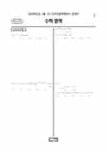

문제지

시험지 만들기준비하고 있어요. 열리면 아래 탭에서 바로 쓸 수 있어요.
전국연합학력평가 · 시·도교육청 주관
2026년 3월 고3 학력평가 수학 기하 1등급컷은 원점수 84점(추정), 표준점수 최고점은 150점입니다.
원점수 1등급컷은 공식 발표값이 아니라 EBSi·입시기관 값입니다. 등급별 값은 등급컷 표, 출처 구분은 데이터 원칙에 있습니다.

| 등급 | 표준점수 이상 | 인원(명) | 비율 |
|---|---|---|---|
| 1 | 134 | 13,659 | 4.11% |
| 2 | 127 | 29,209 | 8.79% |
| 3 | 119 | 35,087 | 10.56% |
| 4 | 106 | 56,595 | 17.03% |
| 5 | 89 | 69,044 | 20.78% |
| 6 | 80 | 65,713 | 19.77% |
| 7 | 77 | 27,669 | 8.33% |
| 8 | 74 | 23,484 | 7.07% |
| 9 | 67 | 11,862 | 3.57% |
수학 영역 전체 응시자 기준이에요.
출처: 시·도교육청이 공개한 전국연합학력평가 성적 분석·통계자료(공개 자료 보기).
EBSi 응답자 기준으로 가장 많이 틀린 문항은 22번(4점, 주관식)이고, 오답률은 93.1%입니다. 오답률 50%를 넘은 문항은 9개입니다.
| 순위 | 문항 | 배점 | 오답률 | 정답 | 많이 고른 오답 |
|---|---|---|---|---|---|
| 1 | 22번 | 4점 | 93.1% | 80 | 주관식 |
| 2 | 21번 | 4점 | 83.4% | 48 | 주관식 |
| 3 | 30번 | 4점 | 76.5% | 52 | 주관식 |
| 4 | 20번 | 4점 | 73.1% | 67 | 주관식 |
| 5 | 15번 | 4점 | 67.5% | ③ | ④ 30% |
| 6 | 29번 | 4점 | 64.7% | 12 | 주관식 |
| 7 | 28번 | 4점 | 63.9% | ③ | ④ 25.2% |
| 8 | 14번 | 4점 | 61.5% | ② | ④ 32.3% |
| 9 | 11번 | 4점 | 55.6% | ⑤ | ② 30.5% |
| 10 | 18번 | 3점 | 46.7% | 124 | 주관식 |
| 11 | 12번 | 4점 | 46.1% | ① | ③ 15.4% |
| 12 | 13번 | 4점 | 41.4% | ⑤ | ③ 13.7% |
| 13 | 27번 | 3점 | 40.3% | ⑤ | ③ 12.6% |
| 14 | 10번 | 4점 | 38.3% | ② | ③ 15.5% |
| 15 | 8번 | 3점 | 35.6% | ① | ⑤ 12.7% |
EBSi 가채점 응답자 기준 · 전 문항 중 오답률 상위 15문항
출처: EBSi 역대 등급컷·오답률 공개 화면. 가채점에 참여한 EBSi 이용자 응답이라 전체 응시자 정답률과는 다를 수 있습니다.
발행 기관: 시·도교육청(전국연합학력평가). 파일 위치: 이 사이트가 보관한 사본. 저작권은 발행 기관에 있습니다. 원본과 다르거나 게시 중단이 필요하면 연락처로 알려 주세요. 등급컷 출처 구분은 데이터 원칙에서 설명합니다.
막대 색은 역대 대비 난이도 · 진한 막대가 이 시험 · 막대를 누르면 그 회차로 이동
| 회차 | 1등급컷 | 표점 최고 | 1등급 표점 | 난이도 |
|---|---|---|---|---|
| 3월 학평2026년 고3이 시험 | 84 | 150 | 134 | 쉬움 |
| 10월 학평2025년 고3 | 85 | 146 | 132 | 매우 쉬움 |
| 7월 학평2025년 고3 | 86 | 148 | 135 | 매우 쉬움 |
| 5월 학평2025년 고3 | 78 | 156 | 135 | 쉬움 |
| 3월 학평2025년 고3 | 80 | 157 | 136 | 어려움 |
| 10월 학평2024년 고3 | 82 | 151 | 136 | 보통 |
| 7월 학평2024년 고3 | 81 | 156 | 135 | 보통 |
| 5월 학평2024년 고3 | 76 | 167 | 141 | 매우 어려움 |
| 3월 학평2024년 고3 | 82 | 154 | 137 | 어려움 |
| 10월 학평2023년 고3 | 85 | 150 | 135 | 쉬움 |
공통과목 22번(4점, 93.1%)은 자연수에 따라 정해지는 두 함수와 직선이 만나는 두 점 사이의 거리 조건을 다룬 문항, 21번(4점, 83.4%)은 삼차함수로 정의한 함수의 도함수 조건을 다룬 문항이었습니다.
20번(73.1%)은 배수 여부에 따라 정의된 수열 문항, 객관식 15번(67.5%)은 구간에 따라 정의된 함수가 미분가능할 조건을 다룬 문항으로 응답의 30.0%가 한 오답을 골랐습니다.
기하 30번(4점, 76.5%)은 쌍곡선의 꼭짓점과 초점을 지나는 직선 위의 점을 다룬 문항, 29번(4점, 64.7%)은 포물선과 초점을 중심으로 하는 원의 교점을 다룬 문항, 28번(4점, 63.9%)은 쌍곡선 위의 점을 중심으로 하는 원을 다룬 문항이었습니다.
기하는 응시자가 2.1%로 적었고, 이차곡선 단원만 출제되어 다른 선택과목보다 오답률이 낮은 편이었습니다. 이차곡선의 정의를 바로 식으로 옮기는 연습이 핵심입니다.
3월 학력평가는 수학Ⅰ·Ⅱ 전 범위와 선택과목을 처음 함께 점검하는 시험입니다. 21·22번 같은 함수 조건 문항은 그래프 개형을 먼저 그리고 조건을 하나씩 적용하는 순서를, 수열 문항은 첫 몇 항을 직접 나열해 규칙을 찾는 습관을 익혀 두는 것이 좋습니다.